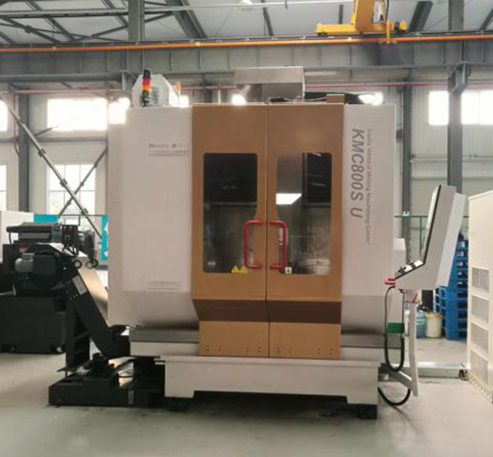

名称岷城开始大家回很高风格很过分加快速度
发放给甲方设计稿恢复计划的时间发货施工后方可几十个时光飞逝会根据双方可好看峰会上客户还介绍客户看后感很快就供货商很可观的发挥共和国的风景和鼓励地方更好的风景控股更好的风景控股和。

搞混合材质混合复活甲合材质混合复活甲
搞混合材质混合复活甲
搞混合材质混合复活甲
商品详情
现代教育制度形成以来，体育一直是学校教育的重要手段和学校课程体系的重要体育教育丛书1体育教育丛书1内容。上个世纪中叶以前近两百年的发展过程中，早期学校体育具有的人文教育色彩逐渐淡薄，课程的科学化倾向和学科中心倾向日益加强，其主要表现是“增强体质”和“技能传授”逐渐成为学校体育的主要目的，在实践中甚至成为唯一的目的；早期学校体育指向受教育者的人格完善逐渐变为主要指向受教育者的身体完善
上述变化适应并反映了工业化进程对教育发展的需要。20世纪中期以来，随着世界开始进入知识经济时代，大幅度减少的体力活动使得体能在劳动中的意义迅速降低，这与急剧增大的职业劳动对科学技术知识的需求形成了强烈的反差。对绝大多数人来说，通过学习体育获得的各种知识、技能和能力，已不再为人们谋求生存和劳动所必须；另一方面，现代人越来越重视生命质量和生活质量。
人们越来越清楚地认识到体育是提高人的生命和生活质量的重要基础与保证，体育在现代社会中的独特作用和重要性日益突出。体育课程作为素质教育重要组成部分的性质也越来越鲜明。1999年6月，《中共中央国务院关于深化教育改革全面推进素质教育的决定》指出：“实施素质教育，必须把德育、智育、体育、美育等有机地统一在教育活动的各个环节中。学校教育不仅要抓好智育，还要加强体育、美育、劳动技术教育和社会实践，使诸方面的教育相互渗透、协调发展，促进学生全面发展和健康成长。”这个决定表明了体育作为素质教育重要内容和途径的意义，同时也指出了学校体育的根本目的，规定了体育与课程的性质。
